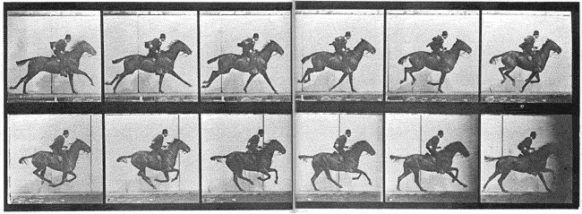
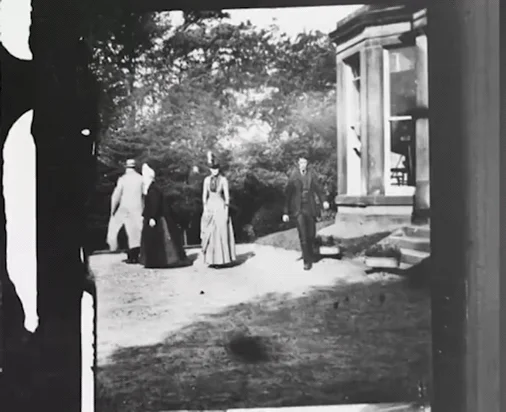
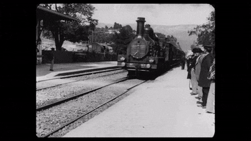
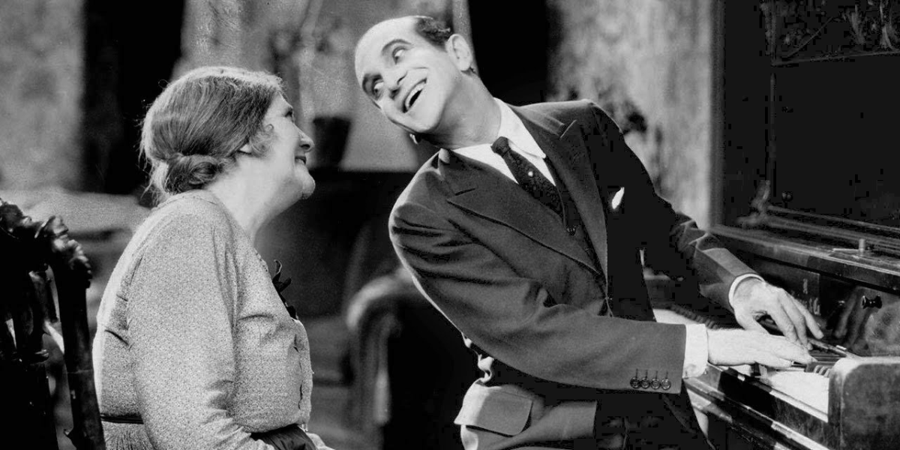

The first stop-motion film was made by Eadweard Muybridge in 1878. Titled The Horse in Motion, it consists of 11 frames and was produced to resolve a debate about whether a horse lifts all four hooves off the ground while galloping. To capture the horse's movement, Eadweard Muybridge arranged a row of cameras along a track, each equipped with a tripwire that triggered the shutter as the horse ran past, taking individual photographs in sequence. This method produced a series of still images, each depicting the horse in a slightly different position. Muybridge then used his own invention, the zoopraxiscope—a rotating glass disk with images painted around its edge—to project the photos in quick succession. When spun and illuminated, the device created the illusion of continuous motion, bringing the horse’s gallop to life.
The 1888 Roundhay Garden Scene by Louis Le Prince and the 1895 Arrival of a Train by the Lumière brothers marked a shift from stop-motion to true motion-picture filmmaking. Unlike Muybridge’s frame-by-frame method, these clips were filmed as continuous motion using single-lens cameras that recorded onto strips of film. Roundhay Garden Scene is a brief 2.11-second shot of people walking in a garden, while Arrival of a Train captures a train pulling into a station. Le Prince’s innovative work is often credited with laying the foundation for modern cinema.



In 1927, the era of “talkies” began with the release of The Jazz Singer, the first film to feature synchronized dialogue. Audiences were amazed by the groundbreaking use of sound, marking a pivotal shift from silent films to sound cinema. The film's success revealed the powerful impact of audio in storytelling and triggered a swift industry-wide shift, with sound technology becoming standard in films around the world within just a few years.
Technicolor is a groundbreaking color film process that revolutionized the movie industry by making vibrant, lifelike color possible on screen. First developed in the early 20th century, it became widely used in the 1930s and 1940s, especially in musicals and fantasy films. By combining multiple strips of film, each capturing a different primary color, Technicolor created rich, saturated visuals that set a new standard for cinematic color, especially with the Wizard of Oz. The Wizard of Oz wasn’t the first film to use Technicolor, but it was credited with bringing color to the masses.